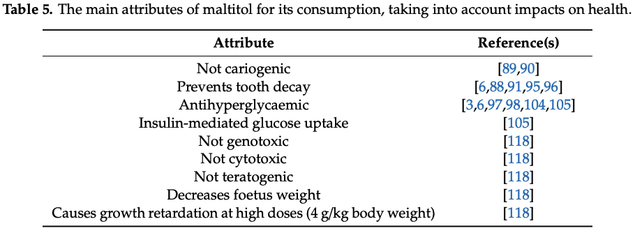

A detailed look at sugar-, fat-, and meat-free foods as opposed to their counterparts.
A couple of things right off the bat.
First, if the food has a sugar- or fat-free alternative, it probably isn't healthy to begin with. Natural, unprocessed foods can't have sugar or fat removed, whereas the processed garbage most people eat (myself included!) can. Just remove a few ingredients, change the processing, add a few ingredients, and BAM! It's basically the same, just without the "bad" stuff!
Second, added sugar is unhealthy. There are no ifs, ands, or buts about it. Anyone saying otherwise should be ignored and avoided.
Third, I have little background in nutrition, so take the following with a grain of salt (not sugar!).
Both sugar and fat have become the enemy of many people. The blanket reaction upon seeing sugar or fat in an ingredient list is to scorn that food, regardless of whether or not it's actually healthy. But when the miracle words of "sugar-free" or "fat-free" are presented on that colorful box, everything changes. It becomes healthy and worthwhile to eat. Not so fast... it tastes similar to its unhealthy sibling, but without all the bad stuff. What's the catch. That's what will be investigated below.
Four different foods/drinks will be looked at:
Common ingredients will be eliminated and the remaining ingredients compared against one another.
Here are the nutritions labels for both types of lemon-lime Gatorade:
And text versions for regular Gatorade:
Water, sugar, dextrose, citric acid, salt, sodium citrate, monopotassium phosphate, gum arabic, glycerol ester of rosin, natural flavor, yellow 5
And GZ:
Water, citric acid, sodium citrate, salt, monopotassium phosphate, gum arabic, sucralose, acesulfame potassium, glycerol ester of rosin, natural flavor, yellow 5
There are three differences in ingredients (ingredients in parentheses indicate which version it is present in):
Dextrose is chemically identical to glucose and naturally-occurring. I do not consider this to be an unhealthy ingredient.
Sucralose is an artificial sweetener and the primary sugar substitute that allows for GZ to taste somewhat similar to its sugar-laden sibling.
Although its safety is debated amongst various groups, it appears to be safe. Highlights from Magnuson et al.'s Critical review of the current literature on the safety of sucralose finds that:
- Comprehensive review of sucralose toxicology: growth, development, genetox, reproduction, neurotoxicity, and carcinogenicity.
- No adverse effect on health or glycemic indices following long-term sucralose consumption in healthy and diabetic subjects.
- Estimated intakes of sucralose remain well below acceptable daily intake values.
- Confirms conclusions of regulatory agencies globally that sucralose is safe for intended uses as a non-caloric sweetener.
The FDA has no issues:
Sucralose has been extensively studied and more than 110 safety studies were reviewed by FDA in approving the use of sucralose as a general purpose sweetener for food.
From Gatorade's website:
Acesulfame Potassium, which is sometimes referred to as Ace-K, is a non-nutritive sweetener that is approximately 200 times sweeter than table sugar (sucrose).
From Low-calorie Sweeteners and Other Sugar Substitutes: A Review of the Safety Issues:
It does not promote tooth decay.
More than 50 studies of various aspects of safety were conducted before USFDA approved this sweetener for use in dry foods, and additional studies to evaluate its stability in liquids and assess the safety implications of possible breakdown products were conducted before USFDA approved its use in beverages.
The USFDA’s conclusion that acesulfame-K is a safe food additive is consistent with decisions reached by experts in other countries. About 90 countries permit the use of this sweetener.
No human health problems associated with the consumption of acesulfame-K have been reported in the scientific literature, despite more than 15 y of extensive use in many countries
If the artificial sweetener conclusions are to be trusted, which I believe they are, then Gatorade Zero is better for you than regular Gatorade because of the lack of added sugar.
Here are the ingredient lists for regular Reese's Peanut Butter Cups (RR):
Milk Chocolate (Sugar, Cocoa Butter; Chocolate; Nonfat Milk; Milk Fat; Lactose; Soy Lecithin; PGPR, Emulsifier); Peanuts; Sugar; Dextrose; Cocoa Butter; contains 2% or less of: Partially Hydrogenated Vegetable Oil (Palm Kernel and Palm Oil); Salt; PGPR, Emulsifier; TBHQ (preservative).
And the zero-sugar version (RZ):
Maltitol, Peanuts (Adds a Negligible Amount of Sugar), Cocoa Butter, Chocolate (Adds a Negligible Amount of Sugar), Lactitol (Milk), Cellulose Gel, Polydextrose (Adds a Negligible Amount of Sugar), Vegetable Oil (Peanut Oil, Palm Kernel Oil, Palm Oil), Milk Fat, Contains 2% or Less of: Cream (Milk) (Adds a Negligible Amount of Sugar), Salt, Lecithin (Soy), Sodium Caseinate (Milk), Natural & Artificial Flavor, PGPR, Sucralose, TBHQ & Citric Acid (to Maintain Freshness).
There are 11 differences in ingredients (ingredients in parentheses indicate which version it is present in):
Dextrose and sucralose have been qualified as safe from the Gatorade section, so those will not be looked at, leaving nine ingredients to be investigated.
Despite saying no trans fat on the nutrition label, this ingredient contains trans fat, which is always a bad kind of fat. No studies will be cited because this is common knowledge.
Maltitol is a sugar alcohol (not to be confused with an artificial sweetener, which contains zero calories) that is used as a sugar substitute.
From Saraiva et al.'s Maltitol: Analytical Determination Methods, Applications in the Food Industry, Metabolism and Health Impacts:
we can assume that maltitol at lower doses poses little risk to humans and is a good alternative to using sucrose. However, it causes diarrhoea and foetus complications at high doses.
As my favorite college textbooks would say, we will leave following up on the references to the reader.
So, in summary, don't consume large doses of maltitol, especially as a pregnant woman, and everything will be fine.
Lactitol is another sugar alcohol used as a sugar substitute. [NEED STUDIES HERE]
Cellulose is a fiber found in plants to increase stability (and in some cases, add fiber). It is GRAS by the FDA.
Polydextrose is a synthetic ingredient often used in conjunction with dextrose to replace sugar in foods (among other things).
Here's what the FDA has to say:
Polydextrose - MISC, REG, GMP, As bulking agent, formulation aid, humectant, & texturizer in baked goods & baking mixes (fruit, custard, & pudding filled pies, cakes, cookies, & similar baked pdt only), chewing gums, confections, frostings & salad dressings, frozen dairy desserts & mixes, gelatins, puddings, fillings, hard & soft candy, film coating on single and multiple vitamin and mineral supplement tablets, where standards permit, pdts w/single serving ctg < 15 g polydextrose should have warning label for sensitive individuals to laxation effect - 172.841
Which just says to avoid using excessive amounts of polydextrose due to its laxation effect. It is otherwise safe.
A summary of milk fat can be found here. I could not find any health issues with milk fat on the internet.
Citric acid is GRAS by the FDA.
Citric acid is GRAS by the FDA.
Here are the ingredient lists for regular
Potatoes, Vegetable Oil (Corn, Canola, and/or Sunflower Oil), and Sea Salt
And the reduced fat version (RF):
Potatoes, Vegetable Oil (Corn, Canola, and/or Sunflower Oil), and Sea Salt
The ingredients are the exact same! This means there must be less vegetable oil in the RF than the KCO, sacrificing on taste. I included this comparison to point out that reduced-[blank] foods don't necessarily substitute ingredients, but rather decrease the amount of the [blank] used.